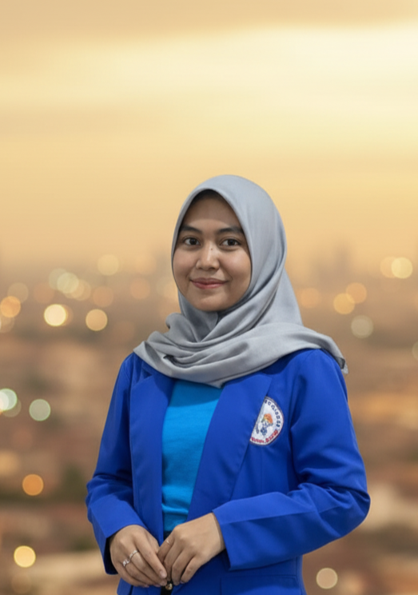

Aqilah Balqis Safitri, S.Pd.
Pendidik Profesional yang Berdedikasi, Kreatif, dan Inklusif. Lulusan Sarjana Pendidikan Matematika.
Lihat Kemampuan Saya
Tentang Saya
Halo! Saya Aqilah Balqis Safitri, seorang Sarjana Pendidikan dari Universitas Indraprasta PGRI dengan hasrat untuk menciptakan lingkungan belajar yang positif dan menyenangkan. Saya percaya bahwa setiap anak memiliki potensi unik, dan tugas saya adalah membimbing mereka untuk menemukannya. Dengan pendekatan yang empatik dan materi ajar yang kreatif, saya berdedikasi untuk memajukan pendidikan generasi penerus.
Lulusan Pendidikan
Sarjana Pendidikan Matematika dari Universitas Indraprasta PGRI dengan IPK [Nilai IPK Anda].
Pendekatan Empatik
Mengutamakan pendekatan yang berpusat pada siswa (student-centered) dan memahami kebutuhan setiap individu.
Media Ajar Kreatif
Terampil dalam merancang dan menggunakan media ajar inovatif (Canva, PowerPoint, alat peraga) untuk meningkatkan minat belajar.
"Saya percaya pendidikan bukan hanya tentang mengisi ember, tetapi menyalakan api. Ruang kelas saya adalah zona aman untuk bereksplorasi, bertanya, dan tumbuh bersama." - Aqilah Balqis Safitri
Kemampuan
Adobe Premier Pro
Ms. Word
Photoshop
Ms. Excel
Power Point
Kualifikasi & Pengalaman
Sarjana Pendidikan (S.Pd.)
Universitas Indraprasta PGRI, Jurusan Pendidikan Matematika
Kuliah Umum Program Kreativitas Mahasiswa (PKM)
Diselenggarakan oleh Universitas Indraprasta PGRI.
Uji Kompetensi Video Editing (Level III KKNI)
Pelaksanaan di SMK Islam PB. Soedirman 1.
Workshop Art Day & Penulisan Naskah
Mengikuti workshop di Institut Kesenian Jakarta (IKJ).
Pengalaman Kerja: Agro TV Indonesia
Bertugas sebagai Editor, Desain Web, dan peliputan ke luar kota.
Testimoni
"Aqilah adalah calon guru yang sangat berbakat dan sabar. Siswa-siswa sangat menyukainya dan ia selalu membawa energi positif ke dalam kelas."
Ibu [Nama Dosen/Guru Pamong], Dosen Pembimbing PPL"Metode mengajar Ibu Aqilah sangat kreatif. Anak saya yang tadinya malas belajar, sekarang jadi lebih antusias."
Bapak [Nama Orang Tua], Orang Tua Murid (jika ada)Hubungi Saya
Saya sangat terbuka untuk berdiskusi mengenai peluang kolaborasi, kesempatan mengajar, atau sekadar berbagi ide tentang pendidikan. Mari terhubung!